Hirosaki
Hirosaki · Aomori
Hirosaki
Highlighted on the Aomori map.
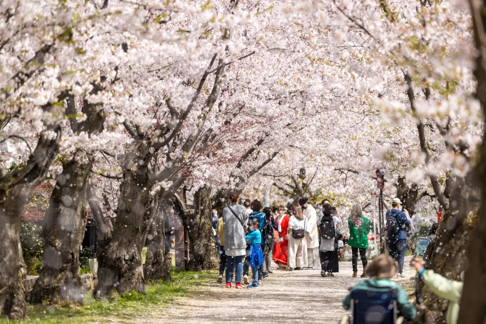
Stay
天然温泉 岩木桜の湯 ドーミーイン弘前
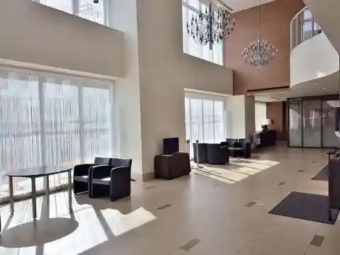
Tennen Onsen Iwaki Sakura No Yu Doomiiin Hirosaki
小堀旅館
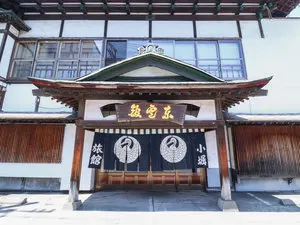
Kobori Ryokan
弘前グランドホテル 弘前城前（ＢＢＨホテルグループ）
Hirosaki Gurandohoteru Hirosakijou Mae ( B B H Hoteruguruupu )
齋栄旅館
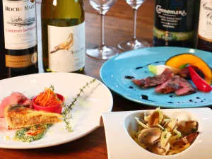
Sai Sakae Ryokan
ＧＯＯＤ ＯＬＤ ＨＯＴＥＬ
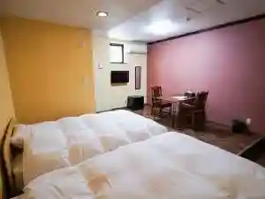
G O O D O L D H O T E L
スマイルホテル弘前
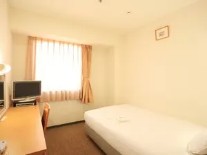
Sumairuhoteru Hirosaki
irigo APARTMENT HOTEL HIROSAKI
Irigo Apartment Hotel Hirosaki
ホテルハイパーヒルズ弘前（ＢＢＨホテルグループ）
Hoteruhaipaahiruzu Hirosaki ( B B H Hoteruguruupu )
弘前パークホテル
Hirosaki Paakuhoteru
スーパーホテル弘前
Suupaahoteru Hirosaki
弘前東栄ホテル
Hirosaki Touei Hoteru
Ｆａｎｔａｓｔｉｃ Ｓｔｏｒｙ
F A N T A S T I C S T O R Y
Dining
いろはにほへと 弘前駅前店
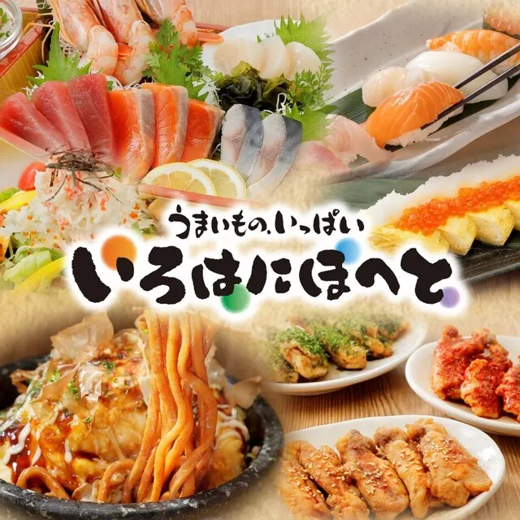
Irohanihoheto Hirosaki Ekimae Mise
串カツ田中 弘前土手町店

Kushi Katsu Tanaka Hirosaki Dotemachi Mise
みーと酒場 肉の飯 NIGU NO MAMA
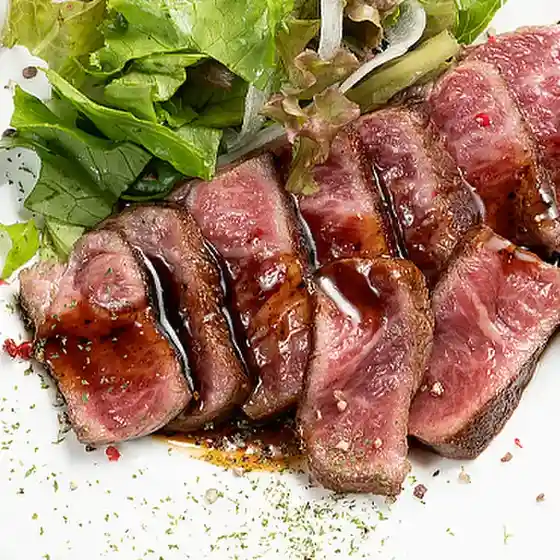
Miito Sakaba Niku No Meshi Nigu No Mama
郷土ダイニング 鮪山
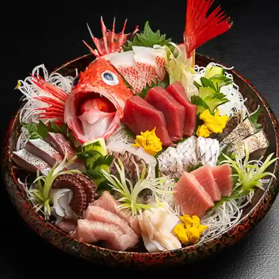
Kyoudo Dainingu Maguro Yama
ブッフェダイニングシェフズレシピ
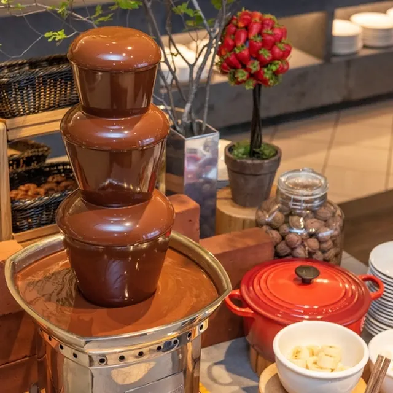
Buffedainingushiefuzureshipi
レストラン山崎
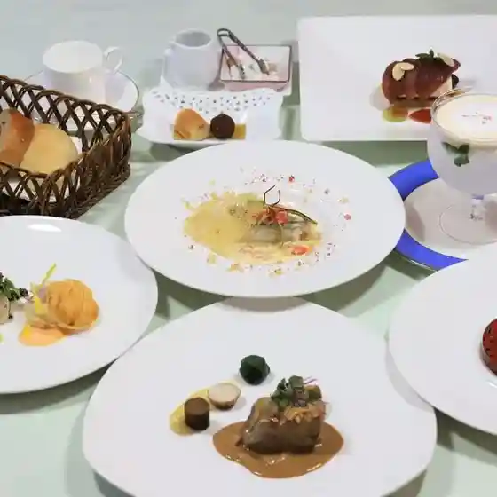
Resutoran Yamazaki
牛角 弘前店

Gyuukaku Hirosaki Mise
しゃぶしゃぶ温野菜 弘前土手町店
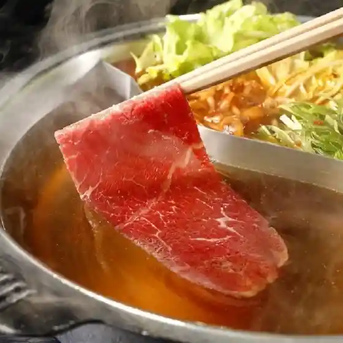
Shabushabu Onyasai Hirosaki Dotemachi Mise
青森の旬菜旬魚とおばんざい 九十九 弘前駅前店
Aomori No Jun Na Shungyo Toobanzai Tsukumo Hirosaki Ekimae Mise
笑笑 弘前駅前店
Shoushou Hirosaki Ekimae Mise
魚民 弘前駅前店
Uotami Hirosaki Ekimae Mise
津軽の酒処 わたみ
Tsugaru No Sake Tokoro Watami
Bistro Oufü.
Bistro Ouf U .
もつ鍋 山善
Motsu Nabe Yamazen
まぐろ海鮮居酒屋 さかなや道場 弘前駅前店
Maguro Kaisen Izakaya Sakanaya Doujou Hirosaki Ekimae Mise
鮨と地酒 地雷也 弘前店
Sushi To Jizake Jirai Ya Hirosaki Mise
フランス食堂 シェ・モア
Furansu Shokudou Shie Moa
個室居酒屋 山善
Koshitsu Izakaya Yamazen
音楽 食堂 オトノキ
Ongaku Shokudou Otonoki
くいもの屋わん 弘前駅前店
Kuimono Ya Wan Hirosaki Ekimae Mise
ワインダイナー & バー ヴァンビーノ
Waindainaa & Baa Vanbiino
串焼酒場 炭太郎
Kushiyaki Sakaba Sumi Tarou
海鮮酒場 浜焼漁港
Kaisen Sakaba Hamayaki Gyokou
俺の餃子
Ore No Gyouza
Sights
Atago Onsen
Hilltop hot spring with views of Mt. Iwaki and Mt. Hakkoda and a popular cold plunge.
Gumonji Temple (Mt. Iwaki)
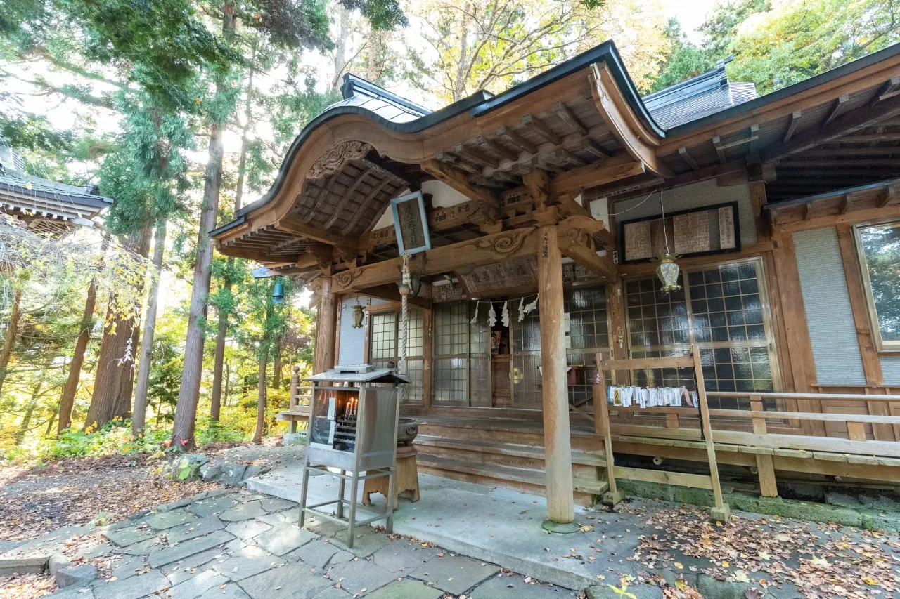
Temple at the foot of Mt. Iwaki enshrining the zodiac ox and tiger, with a Kokuzo Bodhisattva main image.
Zenringai
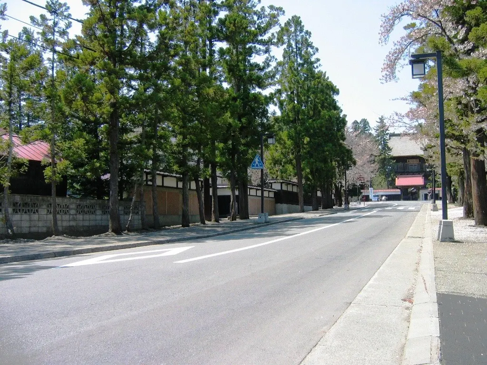
Zenringai in Hirosaki is a unique district in Japan as where is packed with only Soto Zen temples.
Taga Shrine
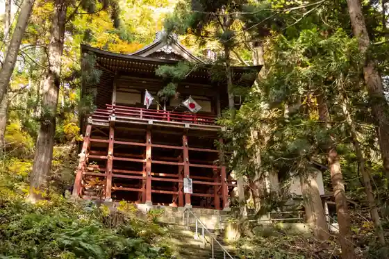
Shrine in Higashimeya enshrining the zodiac rat, also called Kiyomizu Kannon after its Kyoto-style main hall.
Choshiro Park
Large park in Joto with unique play equipment, walking paths and lawns.
Kumano Okuteru Shrine
Historic shrine whose main hall, rebuilt in 1613 by the second Tsugaru lord, is said to be Hirosaki's oldest building.
Former Hirosaki Kaikosha
Large Renaissance-style wooden Western building with ornate details.
Tenmangu Shrine (Nishishigemori)
Shrine on the site of the former Daigyoin mountain-ascetic temple, enshrining Sugawara Tenjin since 1872.
Kakuoin Temple
Shingon temple and former prayer site of the Hirosaki domain, enshrining the Namikiri Fudo.